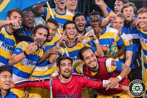
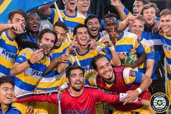
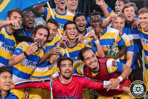

Romario Lomeli
My name is Romario Lomeli. I am 24 years old and have been playing soccer for most of my lifetime. I am currently attending University of California, Riverside. I am currently in my last quarter and will be done with my undergrad. I plan to continue playing soccer after graduating and hopefully land a professional contract in the United States. In my free time I really enjoy working out, playing sports, and hanging out with friends and family. I am very family orientated. I have two brothers who also play soccer. We always enjoy spending time together whether it is playing soccer together or just hanging out and having a good time with each other.
I am an education major and would love to work in the education system at one point of my life. I am looking forward to working with the youth and helping them achieve their dreams. I would love to be a great mentor for our youth and be there for them whenever they need someone. I plan to also continue coaching soccer. Coaching is a job that I truly enjoy and love. I love sharing my knowledge of soccer and educating the youth on how to develop and play soccer. Soccer is a sport that I am very passionate about and would love to see where this sport can take me as a coach. The sport has taught me so much and I would love to teach the sport I love so much to someone else.
My work experience includes being a coach at Cathedral High School. During this time, I helped my team reach Cif Finals and State Finals. My team also won the Santa Fe League. We were ranked a top 10 high school soccer team in the nation. I also played professional soccer in Seattle, Washington. Iplayed for Kitsap Pumas. We won our division and made it top the national semi final game. During my professional time, I helped train young kids and develop their individual soccer skills.
Experience
Student Athlete Soccer Player
• Attacking Midfield for Men's Soccer team
• Captain of the team
• First Team All-Conference
Soccer Coach
• Ran training sessions to help players develop soccer skills
• Scouted players
• Helped over 100 student athletes get recruited to College
• Organized fundraisers
Education
University of California Riverside
Portfolio
 



